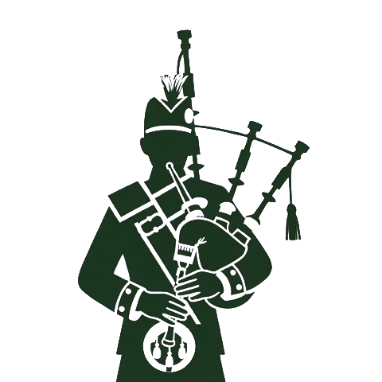
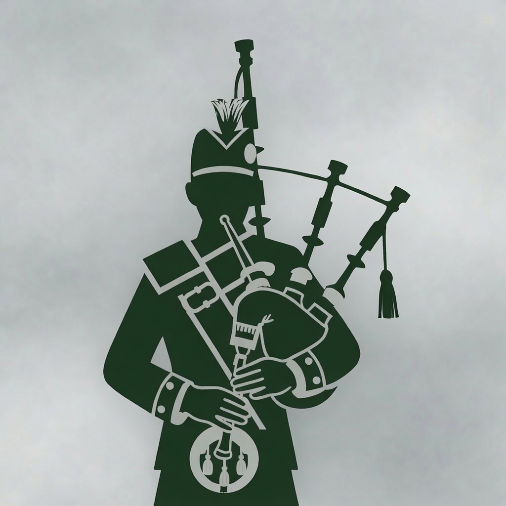

Bagpipe Golf
Email assets
Images that transactional email can link to. An email client cannot read a file out of our repo, so anything a template shows has to be served from a public URL that never moves.
Unlisted page. Nothing links here and it is marked
noindex. It exists so whoever wires a template has the
exact URLs in one place.
Logo
Three sizes of the same mark. Each preview below sits half on white and half on brand green — what an asset does at that seam is the whole question.
logo-112.png
- Size
- 112 × 112 · 7 KB
- Backing
- White, opaque
- Use for
- Email headers. 2× for a 56 px slot
https://bagpipegolf.com/email/logo-112.png

logo-480.png
- Size
- 480 × 480 · 74 KB
- Backing
- White, opaque
- Use for
- Anywhere larger — hero rows, partner decks
https://bagpipegolf.com/email/logo-480.png

logo.jpg
- Size
- 1024 × 1024 · 170 KB
- Backing
- Grey, baked in
- Use for
- The original. Kept because links to it already exist
https://bagpipegolf.com/email/logo.jpg
Prefer the PNGs.
logo.jpg carries a grey backdrop
that reads as a grey square on a white surface, and the mark itself is
#1C3520 — close enough to the brand green
#1A5C38 that a transparent version would nearly vanish on
our own header. White backing is what works on both.
Drop it into a template
This is the header the invite emails actually send — 56 px on brand green, served at 2×. Width and height are set as attributes as well as inline styles, because Outlook ignores the stylesheet and reads the attributes.
<img src="https://bagpipegolf.com/email/logo-112.png"
alt="Bagpipe Golf"
width="56" height="56"
style="display:block;border:0;outline:none;text-decoration:none;width:56px;height:56px;border-radius:12px;" />
- Always an absolute
https://URL. A relative path resolves against the mail client, not against us, and renders as a broken image. - Always an
alt. Most clients block images until the reader allows them, so the alt text is what the first open actually shows. - This path is stable. If the mark is ever redrawn, replace the file at this URL rather than pointing templates somewhere new — mail already in people's inboxes keeps loading from here.